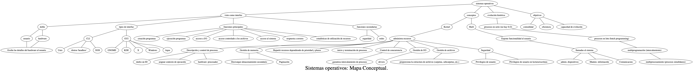

Introducción a Sistemas Operativos Sistema operativo: Definición Procesos Procesos2
Table of Contents
1 Temas
1.1 Arquitectura Computador
1.2 Funciones y objetivos de los S.O
- Descripción y control de los procesos
- Procesos, subprocesos e hilos de procesos
2 Contenido Temático
- Concurrencia
- Gestión de memoria.
- Planificación en sistemas operativos
- Gestión de entrada/salida y planificacion de disco
- Gestion de archivos
- Introduccion a la Seguridad en S.O
- Introducción a las redes
3 Notas
- Taller/Lab 60%
- Parcial 40%
*Introduccion a los sistemas operativos
3.1 Cómo se definiría un sistema operativo?
Es un software que se encarga de tres(?) funciones:
- Admin. recursos de la computador
- Correr los programas
- Interactuar con el usuario.
Algunos detalles interesantes:
- Es una intrerfaz doble, con el usuario y con el hardware.
- Oculta al programador los detalles de hardware.
3.1.1 OS
3.1.2 Operaciones del SO
- Descripción y control de procesos
Asignar recursos a procesos, permitir el intercambio de inf. entre ellos. , proteger los recursos y sincronizarlos. Y describirlos:
- darles un id
- contexto de ejecución.
hardware asociado: procesador
- Control de concurrencia
Asegurar los procesos se intercalen exitosamente en el tiempo dando la apariencia de una ejecución simultánea. Los que concurren son los procesos. Existen : algoritmos de control de concrureencia
- Gestión de Memoria
- Des/cargar hacia el almacenamiento secundario.
- Paginación (bloques de) = recursos memoria a diferentes aplicaciones.
- Planificación
Repartir los recursos del sistema entre necesidades potencialmente competitiva teniendo en cuenta niveles de prioridad y plazos. Ejemplo: 'programa no responde'. para inicio y terminación de procesos.
- Gestión de entrada y salida
Puertos
- Gestion de archivos
- Seguridad
- Firewall
- Privilegios de usuario / lectura /escritura
- Gestion de redes
- Todo OS moderno debe tener esto.
- la ´nube'' = red de servidores de topología indefinida.
3.1.3 Llamadas al sistema
3.1.4 Evolución del OS
- Hombre-máquina = no había OS. Solo procesos en serie.
- Procesos por lotes = procesos en serie, monitor del sistema (cargabas los programas y luego se ejecutaban en serie)
- Proceos por lotes con multiprogramación
- Sistemas de tiempo compartido = multiprocesamiento multiprogramacion (intercalaba el uso del procesador) != multiprocesamiento (al mismo tiempo)
3.1.5 Tarea : hacer mapa conceptual de todo lo visto hasta hora
Mindomo Cmaptools

- Terminar conceptos
- Concepto de proceso
"el proceso se puede definir como un programa en ejecución y, de una forma un poco más precisa, como la unidad de procesamiento gestionada por el sistema operativo." – Jesús Carretero
La mayoría de os está basado en procesos. Para definirlo: Una actividad que se está desarrollando:
- asociado a programa ejecutable
- datos asociados o variables: debe haber un recurso de memoria asignado a ese proceso.
- contexto de ejecución
- ¿Qué datos están asociados al proceso?
"Una parte muy importante de estas informaciones se encuentra en el llamado bloque de control del proceso (BCP). El sistema operativo mantiene una tabla de procesos con todos los BCP de los procesos. Por razones de eficiencia, la tabla de procesos se construye normalmente como una estructura estática, que tiene un determinado número de BCP, todos ellos del mismo tamaño. El contenido del BCP se analizará con más detalle en secciones posteriores; sin embargo, de manera introductoria se puede decir que la información que compone un proceso es la siguiente:
- Contenido de los segmentos de memoria en los que residen el código y los datos del proceso. A esta información se le denomina imagen de memoria o core image.
- Contenido de los registros del modelo de programación.
- Contenido del BCP."
– Jesus Carretero
- ¿Qué es un entorno de ejecución?
"El entorno del proceso consiste en un conjunto de variables que se le pasan al proceso en el momento de su creación. El entorno está formado por una tabla NOMBRE-VALOR que se incluye en la pila del proceso. El NOMBRE especifica el nombre de la variable y el VALOR su valor. Un ejemplo de entorno en UNIX es el siguiente:
- PATH=/ USR/ bin: / home / pepe / bin TERM= vt 100
- HOME= /home/pepe
- PWD= / home /pepe /libros / primero
En este ejemplo, PATH indica la lista de directorios en los que el sistema operativo busca los programas ejecutables, TERM el tipo de terminal, HOME el directorio inicial asociado al usuario y PWD cl directorio de trabajo actual. Los procesos pueden utilizar las variables del entorno para definir su comportamiento. Por ejemplo, un programa de edición responderá a las teclas de acuerdo al tipo de terminal que esté utilizando el usuario, que viene definido en la variable TERM. "
- Estados
Normalmente los procesos se encuentran en determinado estado:
- ejecución
- espera
- terminado
- esperando recursos
- Historia
El concepto 'proceso' ha venido evolucionando:
- lotes multiprogramación
- interrupciones
- Características
Hasta que ese nuevo evento deje de suceder, no va a cambiar de estado. Si no exitirera las eventualidades, tocaría esperar a que terminara el programa.
- sincronización incorrecta
- fallos de exclusión mutua:
que un usuario o un programa trate de usar un recurso compartido de forma simultánea. Ej: 2 personas compran la misma silla en el mismo tiempo. El so tiene que estar en capacidad de reservar ese espacio a uno de los 2.
- Funcionamiento no determinista del programa.
Cuando los programas comparten memoria pueden sobreescribirse sin previo avisa. El sistema operativo debe estar en capacidad de manejar colas.
- interbloqueo de operaciones
Tengo aplicacion a y b y van a guardar información a memoria y unidad de cd, respectivamente. Ambas podrían quedar esperando a la otra a que termine.
- memoria virtual
Hace uso del almacenamiento primario y secundario.
- Concepto de proceso
- Herramientas de supervisión de recursos
- tipos
- Qué se supervisa
- Memoria
- Disco
- CPU
- Red
- windows
- administrador de tareas
- monitor de rendimiento
- Recordar: 3 elementos
- ejecutable
- datos asociados
- contexto de ejecución
- Repaso: características
funcionamiento no determinista
- interbloqueo
- concurrencia
- etc.
Estas características se ven plasmadas en los modelos de gestión de procesos. El aspecto práctico de esto será visto en el ejercicio de más abajo.
- Modelos
- de dos estados
- de cinco estados (el que es )
- Anotaciones:
- no es lo mismo un proceso que sale, que uno interumpido. el interrumpido queda con variables asociadas. El de salida libera memoria.
- un proceso puede pasar de liso a terminado sin pasar por ejecución.
- colas o hilos
- Ejercicio de ejemplo
proceso accion que solicita memoria requerida resultado/efecto de solicitud memoria restante p1 ejecución 128 mb p1 -> ejecucion 256 -128=128mb p2 ejecucion 128 mb p1->listo no puede ejecutar,porque p1 no ha finalizado 0 mb p3 ejecucion 64 mb p3-> nuevo, no hay recursos que asignarle 0mb p1 terminar - p1->terminado , p2->ejecucion p3 ->listo 64 mb p2 lectura de datos en disco - p2->bloqueado, p3->ejecución 64 mb p4 ejecucion 128 p4 ->nuevo 64 mb p2 fin lectura datos - p2 ->listo 64 mb p3 terminado - p3->terminado, p4->listo,p2->ejecucion 0 p5 ejecucion 64 p5->nuevo 0 p. nuevo p. ejecucion cola de listos bloqueados terminados memoria p5 p2 p4 0 p1 p3 0
- tipos
4 Concurrencia
4.1 Parcial
- conceptos SO (concurrencia, interrupciones, exclusion mutua)
- Comandos DOS
- Procesos
- Concurrencia
4.2 Como un SO soluciona la concurrencia
4.3 Recurso compartido
4.4 Sección crítica
4.5 tres fenomenos decConcurrencia
- exclusión mutua Prohibir demás procesos de realizar una accion cuando uno haya obtenido permiso
- interbloqueo
- inanicion
4.6 algoritmos para solucionar concurrencia
- Dekker 1.0 Puede dejer interbloqeo Puede dejar inanicion
- Dekker 2.0 Puede persistir interbloqueo Ventaja: lapsos de tiempo para pedir el turno
- Petersen Mas eficiente que Dekker
4.7 Ejemplo 1
| P1= 0 | P1++ |
| P2=0 | P2 +=2 |
| Secuencia ejecucion | procedimiento ejecutandose | valor p1 | valor p2 | observaciones |
| 1 | p1 | 1 | 0 | inicia p1 |
| 2 | p2 | 1 | 2 | inicia p2 |
| 3 | p1 | 2 | 2 | - |
| 4 | p2 | 2 | 4 | - |
| 5 | p1 | 3 | 4 | - |
| 6 | p2 | 3 | 6 | inicia sección critica p2 |
| 7 | p2 | 3 | 8 | - |
| 8 | p2 | 3 | 10 | - |
| 9 | p2 | 3 | 12 | fin sección critica p2 |
| 10 | p1 | 4 | 12 | inicia sección crítica p1 |
| 11 | p1 | 5 | 12 | - |
| 12 | p1 | 6 | 12 | - |
| 13 | p1 | 7 | 12 | fin sección critica p1 |
| 14 | p2 | 7 | 14 | - |
| 15 | p1 | 8 | 14 | - |
| 16 | p2 | 8 | 16 | finaliza p2 |
| 17 | p1 | 9 | 16 | - |
| 18 | p1 | 10 | 16 | finaliza p1 |